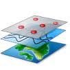

lodable feed layer ...
Itinerari di San Benedetto del Tronto
- Arte e Storia (47 kb)
- Giardini naturalistici(48 kb)
- Luoghi di diporto (45 kb)
- Cultura (45 kb)
- Scuole (45 kb)
- Servizi (45 kb)
Cartografia di San Benedetto del Tronto
- Uso Suolo (141 kb) Uso del suolo del comune di San Benedetto del Tronto, diviso in varie sublayer
- Zone verdi (54 kb) Uso del suolo del comune di San Benedetto del Tronto, solo zone verdi
- Curve di livello (2.138 mb) !
- Quartieri (11 kb)
- Sezioni (204 kb) Sezioni di censimento
- Edifici d'epoca (1.802 mb) ! Edifici di San Benedetto del Tronto diviso e colorati per epoca di costruzione
P.A.I. Bacino Tronto
PRG Cupra
Cartografia Tecnica Regionale Marche
Diversi set di layer estratto dalla Cartografia Tecnica Regionale
- Aree agrarie (266 kb)
- Aree verde (296 kb)
- Infrastruttura (11 kb)
- Idrografia (55 kb)
- CTR_tutto (817 kb)
Esempi Open Data
Layer realizzati con dati publici
- Siti archeologici e parchi - Regione Piemonte(45 kb)
- Piste ciclabili - Settimo Torinese(45 kb)
- Scavi archeologici - Firenze(5 Mb kb)
- Seismic Hazard(4 Mb)
- ultimi 20 terremoti
Google My Maps - KML feeds 
Importazione di punti georeferenziati creato con Goole MyMaps, e usufruibile attraverso il formato export KML attraverso Yahoo Pipes™ da 'proxi server'
-
Google My Maps - Hotel a San Benedetto del Tronto
Google My Maps -> KML -> Yahoo Pipes™ -> map layer -
Google My Maps - Residence San Benedetto del Tronto
Google My Maps -> KML -> Yahoo Pipes™ -> map layer -
Google My Maps - B&B e Case di Vacanza a San Benedetto del Tronto
Google My Maps -> KML -> Yahoo Pipes™ -> map layer -
Google My Maps - B&B e Case di Vacanza a San Benedetto del Tronto (colored marker)
Google My Maps -> YQL™ -> map layer -
Cupramarittima carnevale
da Google MyMaps -> YQL™ -> map layer -
Matera Chiese rupestre
da Google MyMaps -> YQL™ -> map layer -
Veranstaltungsraeume Berlin Lichtenberg
da Google MyMaps -> YQL™ -> map layer -
Kindertagesstätten Berlin Lichtenberg
da Google MyMaps -> YQL™ -> map layer -
ProLoco Cupra Marittima - appartamenti
da Google Fusion Tables -> YQL™ -> map layer -
ProLoco Cupra Marittima - Info Map
da Google Fusion Tables -> YQL™ -> map layer -
Genitori
da Google Fusion Tables -> YQL™ -> map layer
Proprietary XML Feed
Diversi test dell'importazione di punti georeferenziati presente in diversi formati da geo feed (proprietary XML, KML, GeoRss, GeoJson) possibile con l'uso di Yahoo Pipes™ da 'proxi server'
-
 Copertura
Copertura
Aliseo XML con posizioni WiFi -> Yahoo Pipes™ -> map layer -
 Decoro urbano - Settimo Torinese
Decoro urbano - Settimo Torinese
Decoro Urbano Roma - GeoRSS - proprietario -> map layer -
Decoro urbano - Torino
Decoro Urbano Roma - GeoRSS - proprietario -> map layer -
Decoro urbano - Roma
Decoro Urbano Roma - GeoRSS - proprietario -> map layer -
Decoro urbano - Napoli
Decoro Urbano Roma - GeoRSS - proprietario -> map layer -
Decoro urbano - tutto (!lento)
Decoro Urbano - GeoRSS - proprietario -> map layer -
 Agenzie turistiche
Agenzie turistiche
Provincia di roma - CKAN - proprietario -> map layer -
WiFi access points
Provincia di roma - CKAN - proprietario -> map layer -
Eventi
Provincia di roma - CKAN - proprietario -> map layer
Eventi georeferenziati
Diversi test dell'importazione di punti georeferenziati presente in diversi formati da geo feed (proprietary XML, KML, GeoRss, GeoJson) possibile con l'uso di Yahoo Pipes™ da 'proxi server'
-
Piceno News
Piceno News - le manifestazioni -> geonamed.org -> map layer -
SBT News
San Benedetto del Tronto -> geonames.org -> map layer -
Eventi nelle Marche
Eventi e sagre -> geonames.org -> map layer -
 Oggi in Italia
Oggi in Italia
Eventi e sagre - geonames.org -> map layer -
 agenda - bari.repubblica.it
agenda - bari.repubblica.it
Eventi da bari.repubblica.it -> geonames.org -> map layer -
 marche abbruzzi
marche abbruzzi
Eventi da exibart.it -> geonames.org -> map layer -
fiere
Eventi da exibart.it -> geonames.org -> map layer -
around
Eventi da exibart.it -> geonames.org -> map layer -
architekt
Eventi da exibart.it -> geonames.org -> map layer -
progetti ed iniziative
Eventi da exibart.it -> geonames.org -> map layer -
progetti ed iniziative
Eventi da exibart.it -> geonames.org -> map layer
Development tests
Diversi test solo per dev purpose
-
www.pagineeventi.it - incomplete georefs - geonames
test incomplete georefs - geonames.org -
espresso.repubblica.it - oggi
test many items -
espresso.repubblica.it - febbraio - all
test many items -
espresso.repubblica.it - many items - all
test many items -
Cinema Margherita
test georef via feedburner -
Cinema SBT
test via - geonames.org
Tutti feed di eventi
-
tutti feed
Eventi da vari fonti - test multi feed